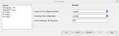
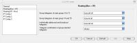
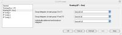
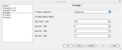
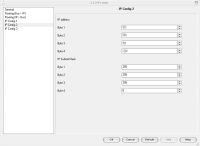

|
This page last changed on Jun 18, 2009 by jeanpierrej.
Ok, so I've finally got the iPod Touch in to work in order to test out iKNX. (the Demo Version) My testbed is a little to large to explain here, as it's basically our Offices, but the key components are:
1. a GIRA IP Router (part no. 1030 00)
2. an iPod Touch (8GB, incase someone's REALLY interested)
3. a KNX Install including Dimmers, Switch/Blind Actuators, Lightscene Controllers and some more bells/whistles)
So, I set up the IP Router as per normal in ETS: (Please note that the Physical Address is "1.1.0". This places it at the top of the hierarchy in order to allow access to all Devices, no matter how large the Install.)





So far my thoughts on it are that it works well, as advertised, for the most part. I had some difficulty at first with the iPod as I set it up to connect to the network but forgot to set the IP Address. As a result it wouldn't connect. So, when setting up for the first time, check your IP Address, not just that you have Wifi.
Other than that, I've noticed the following issues:
1. The "Percentage", what I've used to control a Dimmed Circuit, works nicely when it works. The problem is that it didn't most of the time. Push Buttons on the Interface work well, but the Slider tends to just ignore commands 90% of the time. When it works, it's great.
2. Additionally, I would recommend that the slider itself be larger. I found myself having, "finger trouble," using it. And I don't have fat fingers at all. (Maybe this is linked to the response listed above?)
3. There is no place to enter in a Value, or to set up Lightscenes. This is rather critical from our perspective, and it would be great to see this functionality added. (What would be nice is a Lightscene Button that, like the Switching, brings up a page to select pre-configured and pre-named Lightscenes)
4. With Curtains, Blinds and Shutters there is no place to enter in the second Address for Stepping/Stopping. (Only a status item) While we are able, via another button, to add this functionality, it would be easier from a User's perspective to have the full control on one page.
5. Heating is only available in Celsius, which is fine for now, but Farenheit or even Kelvin would be nice for certain applications.
6. Additionally, the Heating Range set by the Slider is not configurable. This is a must as there are many Devices that only allow control within a certain range. (For example, a Daikin VRV Air-Conditioner will only allow Temperature control between 16 and 32 degrees Celsius)
7. It would be nice for some items to not bring up an additional page, but only to toggle their State. (For example, if you "click" on a Switched Light that was on, it would simply turn off instead of asking what you wanted to do.) Anywhere that a Value Entry or additional information would be necessary should bring up a second page by default, but an option to turn that second page off and rather toggle between two states would be nicer in many instances.
8. There were quite a few instances where connection to the IP Router could not be established. When I went to look at the Router itself, the Rx light would flash on, followed by the Tx light. Then I would get a message that it couldn't connect. It would keep doing this, even for a while after I had stopped pressing the Connect button on the iPod Touch. It seemed to me as though iKNX got itself into a short-term loop and, not knowing the product better, I don't know why or how to stop it from doing that.
9. There were a few times, mostly initially, when I would enter and save the Group Address and, on the next login to iKNX, it would dump it from memory. Don't know why.
10. iKNX seemed to add Group Addresses to the software, even though I had "Learn Automatically" disabled.
Again, this is a first run-through with iKNX. Other than the above issues, it worked well and was easy to setup and use. I've not had time to try with more than one iPod Touch/iPhone but will try that, as well, to see whether the IP Routers do allow more than one connection or not. (IP Gateways have been pointed out as not allowing more than one connection)
Final thoughts are that the monitor function is nice to have and useful at times, though I would like to be able to hide that function. Password protection for a Building would also be nice to have for certain instances.
Anyone else had/noticed these issues and, especially if someone has any solutions for the Value Setting, it would be great to hear. Hope this helps someone.
Cheers,
Jean-Pierre
p.s. If the above screenshots look wierd, it's because I've installed the FlyaKiteOSX Software on my computer. I've got to use Windows for work. It doesn't mean I have to like it. 
|
Hello Jean-Pierre,
Sorry for the delayed response, I just got to this. This is fantastic feedback! Thanks so much for writing it down. We'll make sure to look into these going forward.
Please don't hesitate to send more if other points come up,
– Juha

Posted by juha at Jun 24, 2009 17:19
|
|
Jean-Pierre was having problems accessing this website so I am posting a response on his behalf below.
Jean-Pierre:
No problem. Glad I could help.
There's been some question as to whether an IP Router will allow multiple connections or not. As a result, I've just tested two iKNX demo installs on different devices, one on an iPod Touch and one on an iPhone.
What I can confirm is that, as iKNX stands now, you cannot use two iPhones/iPod Touches concurrently with the same IP Router. It just doesn't work. I was able to connect using both individually, but if I tried to connect the other at the same time, I would receive the error, "Cannot connect to Server."
A curiosity is that, when I would hit the "Cancel" button, it would still keep on trying a few more times before getting the point. Seems like it gets confused and enters a small loop due to the error.
This does not, however, mean that the IP Router does not allow multiple connections, but only that it doesn't allow multiple connections from iKNX presently. The reason I make the distinction (for now) is because of this text found on the iKNX documentation:
My guess is that, due to Multicast Packets not being set yet, that this allows the first iPod Touch/iPhone to connect, but basically tells any additional ones to take a hike. Again, I use the stuff daily, but I'm not so clued up about the inner workings of the protocol.
I'm waiting on a reply regarding the difference between the IP Gateways and IP Routers and will post that when I get a chance. Until then, whether more than one can connect in theory is just a guess.
Posted by juha at Jun 26, 2009 12:11
|
|
As far as I understand it, KNX has defined two protocols. The IP/Routing and IP/Tunneling protocol. If you connect with IP/Tunneling to the router and the tunneling connection is in use and no other tunneling client is allowed. I can verify this with iKNX and ETS. If iKNX is connected ETS cannot connect anymore with the tunneling protocol. But ETS can still connect using the routing protocol. So tunneling only allows one connection and routing multiple. You can for example have ETS connect using tunneling and have to ip gateways connect to KNX lines using routing at the same time.
I guess iKNX is connecting with the tunneling protocol and therefore only one connection is allowed.
We can also add two more devices to the list of gateways that work with iKNX:
- eibd (OpenSource software that supports different backends eg. USB, RS232, IP and provided tunneling and routing protocols)
- Elsner KNX640-IP (KNX Power supply with integrated ip interface. Really cool)
Posted by mredeker at Jun 26, 2009 13:23
|
|
@Juha: Thanks for posting that. It seems my ISP had some problems with DNS Servers, so I've tried other ones and they seem to work now. Strange, but true.
@marcus: That makes sense what you're saying about connecting via ETS and using multiple IP Gateways. We've not done installs needing several yet. We've only ever used Line Repeaters, not having done installs needing several Lines yet. As a result, we've just used the USB Interface. I'll have to play with it and see how that works. (Only so much time when you're dealing with clients, eh?
Given that reasoning, I would have to agree, however, that iKNX is using the Tunneling protocol. I've not yet heard back from GIRA regarding the IP Router and IP Gateway differences. I'm still waiting on a response and have resent my query concerning this, so hopefully should hear back later today.
Finally, that Elsner PSU looks/sounds great. Any idea if it's a Router or a Gateway?
Jean-Pierre
Posted by jeanpierrej at Jun 30, 2009 10:04
|
|
Side note: How do you guys add the spaces between lines? I'm using Rich Text to add replies but when I want to create a new Paragraph, I just hit enter once ... do you have to add two CR's in order to get it to display paragraphs correctly?
Jean-Pierre
Posted by jeanpierrej at Jun 30, 2009 10:06
|
|
Never mind.
I seem to have figured it out. You do need to hit "Enter" twice.
Works great. 
Posted by jeanpierrej at Jun 30, 2009 10:07
|
|
Elsner is implementing both protocols (Router and Gateway). It looks like the ETS is only able to use the busmonitor using the router connection.
For programming you need a gateway connection.
--Marcus
Posted by mredeker at Jun 30, 2009 15:15
|
|
I'm sorry to bother you Jean-Pierre,
but have you try to connect remotely (through a WLAN or 3G)
For me it does not work and it annoys me.
Have you ever encountered the problem, and if so, did you solved? (And How?)
Sincerely,
Fabrice.
Posted by fabulous at Jun 16, 2010 17:48
|
|
{kind=link}
{kind=link}
{kind=link}
{kind=link}
{kind=link}
{kind=link}
{kind=link}
{kind=link}
{kind=link}
{kind=link}
{kind=link}
{kind=link}
{kind=link}